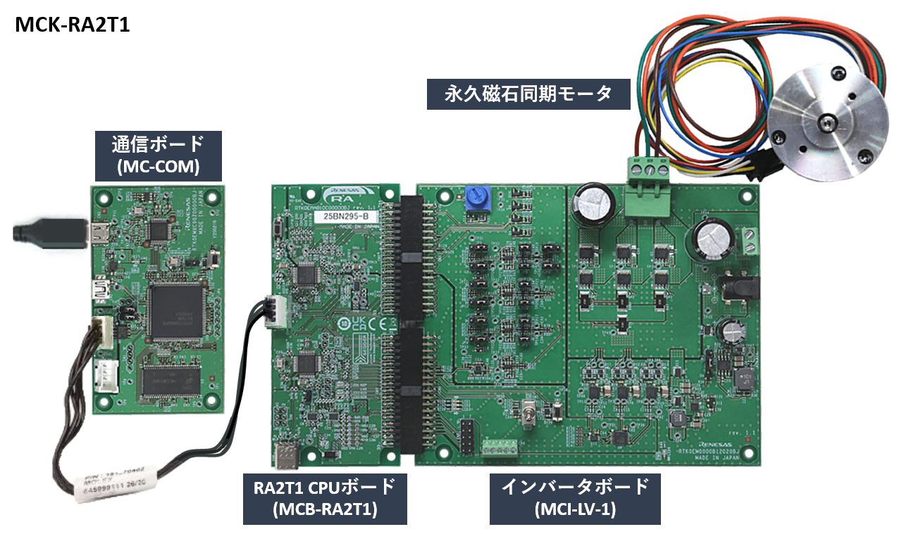

MCK-RA2T1は永久磁石同期モータ(ブラシレスDCモータ)を使ったモータ制御の評価を簡単に行うことができる開発キットです。 本製品と、ウェブサイトからダウンロードできるサンプルコードや QE for Motor を使うことで、 RA2T1 を用いたモータ制御評価をすぐに始めることができます。
MCK-RA2T1 Renesas Flexible Motor Control Kit for RA2T1 MCU Group
RTK0EMA810S00020BJ
|
|
MCK-RA2T1は永久磁石同期モータ(ブラシレスDCモータ)を使ったモータ制御の評価を簡単に行うことができる開発キットです。 本製品と、ウェブサイトからダウンロードできるサンプルコードや QE for Motor を使うことで、 RA2T1 を用いたモータ制御評価をすぐに始めることができます。
|

| 永久磁石同期モータの センサレスベクトル制御 |
|
|---|---|
| CPUボード |
MCB-RA2T1
RA2T1(R7FA4T1BB3CFM) CPUボード (*1) RTK0EMA430C00000BJ |
| インバータボード |
MCI-LV-1 (*1) RTK0EM0000S04020BJ |
| 通信ボード |
RTK0EMXC90S00000BJ |
| 永久磁石同期モータ | R42BLD30L3 (*1)(*2) |
*1: MCK-RA2T1同梱品
*2: R42BLD30L3 は、MOONS’社の製品です。